UDN
Search public documentation:
CreatingDecoLayers
Interested in the Unreal Engine?
Visit the Unreal Technology site.
Looking for jobs and company info?
Check out the Epic games site.
Questions about support via UDN?
Contact the UDN Staff
Creating DecoLayers
Document Summary: An introductory document on setting up DecoLayers. Document Changelog: Last updated by Michiel Hendriks, v3323 update. Previously updated by Jason Lentz (DemiurgeStudios?) to separate into smaller docs for the 2110 build. Original author was Lode Vandevenne (UdnStaff).Introduction
Here you will see how to create your own DecoLayers and the various ways you can manipulate them to your liking. This document assumes that you know how to build and shape a terrain and that you are familiar with the UnrealEdInterface, the StaticMesh Browser, and the Texture Browser.Creating a DecoLayer
DecoLayers generate Static Meshes everywhere on the terrain. You can only see the ones that are inside a radius you can set, to save resources. Also, the StaticMeshes from a DecoLayer are able do not impede players, so using them for trees isn't realistic, but DecoLayers are better used for grass, flowers and ferns. To create a new DecoLayer on a Terrain go to the Terrain Editor and click on the Decorations tab and press
To create a new DecoLayer on a Terrain go to the Terrain Editor and click on the Decorations tab and press 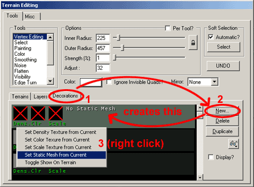
Then you must create a new Terrain Layer. Get a texture that is very different from your terrain (for instance an checked texture -although make sure it's an RGBA8 texture with an alpha channel or a P8 texture). Create a new Terrain Layer by clicking on the "Layer" tab of the Terrain Editor, then click the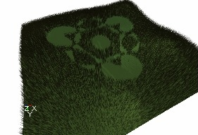
The next options to set are in the Properties window of the Terrain Info. To open this, just double click on the TerrainInfo name in the Terrains tab of the Terrain Editor. Go to the TerrainInfo rollout within the Properties window and then expand the DecoLayers section.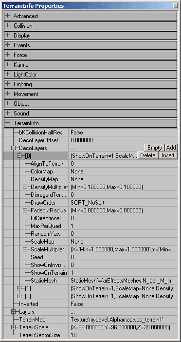
Then expand the DecoLayer enumerated as "[0]", and under the FadeoutRadius enter a large value for the Max, and a smaller value of for the Min. Between each Min and Max FadeOutRadius, the Static Meshes will become more and more transparent, until they become invisible. For example in the screenshot the Min FadeOutRadius is 500 and the Max is 1200. Both radii are marked with a yellow circle on the screenshot. Everything inside the smallest circle is opaque, everything between both circles is translucent, and outside the circles everything becomes invisible.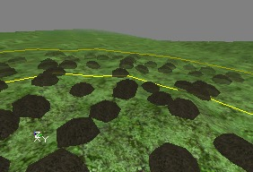
The last in adding the DecoLayer Meshes to your map is to paint them on to your map. To do this, go back to the Layers tab of the Terrain Editor and select the layer you created (Decoalpha1 for this example). If the checkered texture you selected as the Density Texture is showing up when you paint on the DecoLayer Meshes simply go to the Layer tab in the Terrain Editor and move the Layer one below the rest of the Layers in the stack. This causes the terrain to no longer render the texture; however you can still select that layer and paint with it. NOTE: Do NOT paint while you have the DecoLayer selected under the Decorations tab. This can create holes in the Density map which prevent you from painting on StaticMeshes anywhere on those holes.Additional DecoLayer Properties
There are other options for adjusting the DecoLayers within the TerrainInfo rollout. Below are descriptions of what each of field controls.AlignToTerrain
If this is set to [1], this setting will cause the DecoLayer to rotate the StaticMeshes to align with the normal of the quad that the mesh is sitting on. If left at [0] the StaticMeshes will all be vertical.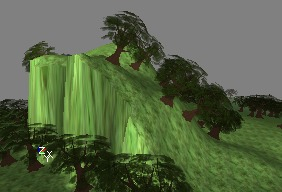
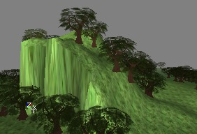
Aligning to the terrain can be useful for such things as rocks and debris, but when used on trees and grass it can look out of place.ColorMap
This map changes the color of the decorations on different locations. It has to be a RGBA8 texture; otherwise all decorations will become black. This effect is best visible on white or very bright Static Meshes. For example, white Static Meshes become like this if you use a colorful ColorMap: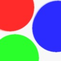
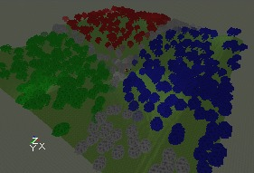
You can also paint a color on the DecoLayer manually: go to the Terrain Editing Window, select the tool "Color", pick a color with the Color button, and then go to the Decorations tab and select the DecoLayer you want to paint on. Then you should be able to paint on the terrain in the 3D View.DensityMap
This is the Texture Map you assigned by right clicking on the Layer in the Terrain Editor. From here you can reassign it to a different texture by first selecting a texture in the Texture Browser then clicking the "Use" button in this field when it is selected.DensityMultiplier
These fields vary the number of StaticMeshes that are placed in the painted DecoLayer area on the terrain. I'm not sure how exactly the Max and Min values separately determine the number ofStaticMeshes placed, but they do each do different things. Experiment with each to find the appropriate density of DecoLayer StaticMeshes.DetailMode
This defines the minimal detail that has to be set before this decolayer is shown. The minimal value isDM_Low, in this case it will always be shown, unless decolayers are completely turned off ( DecoLayers in [WinDrv.WindowsClient] ). With DM_High it's only shown in high detail mode ( HighDetailActors in the render device settings), and DM_SuperHigh is just for eye candy ( SuperHighDetailActors in the render device).
DisregardTerrainLighting
Setting this value to 1 will force the deco meshes to ignore the lighting value of the quad they rest on, and make them appear fullbright.DrawOrder
The DrawOrder allows you to set in what order the decorations should be drawn. SORT_BackToFront draws the ones far away first and then the ones close to the camera, and SORT_FrontToBack does the opposite. SORT_NoSort uses no specific order. You can use this setting to prevent problems with AlphaTextures: if the near trees are drawn first, and after that the distant trees, the engine may forget to draw these behind semi-transparent parts of the AlphaTexture if AlphaTest is on. This is shown on the first screenshot. If you now set DrawOrder to SORT_BackToFront, the distant trees are drawn first, and the AlphaTexture from the near trees is blended correctly over them.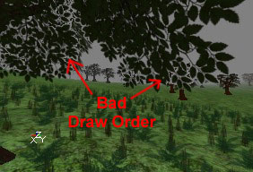
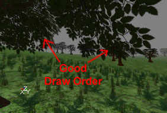
Since there are only three different settings, it is pretty easy to experiment with each of the settings to see which works best for your situation if you're not sure which one to use.FadeOutRadius
These are the radii that the StaticMeshes begin to fade out. The Min setting determines the distance from the camera at which they start to become translucent, and the Max setting determines the distance from the camera at which they become entirely transparent.LitDirectional
If this value is set to [1], it forces the StaticMeshes to use sunlight. It can look very bad in some cases, as it will cause shadows on things like grass and such.MaxPerQuad
This value sets the maximum number of StaticMeshes placed per quad.RandomYaw
If this is set to 1, the StaticMeshes will be randomly rotated along the Z axis which helps break up `tiling' appearance. Be aware that this may cause AlignToTerrain to work incorrectly.ScaleMap
You can add a ScaleMap on the DecoLayer, this is a RGBA8 texture that determines what size the decorations have on different locations on the terrain. This is done for X, Y and Z independently: the red and green channel determine the width and length, and the blue channel the height. For example if you use the texture from the left picture as ScaleMap, and the DecoLayer is a forest, the forest will look like the screenshot on the right: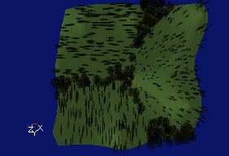